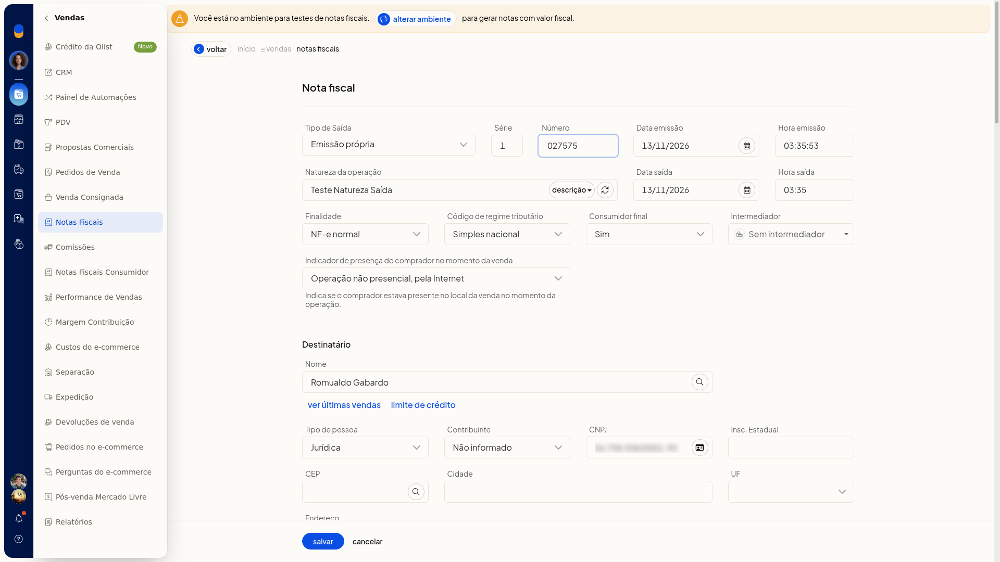

Clonar notas e enviar dados fiscais
No ERP da Olist, Clonar nota abre uma nova inclusão já preenchida com os dados da nota de origem. Você revisa esses dados no formulário e pode descartar a cópia sem gravá-la.
Instruções
-
Acesse Vendas > Notas Fiscais.
-
Abra o menu de ações da linha da nota.
-
Clique em Clonar nota. O formulário de inclusão abre já preenchido com os dados da nota de origem.

-
Clique em Cancelar. A cópia não é gravada e você volta à lista.
Informações adicionais
Outras ações no menu da linha
No mesmo menu da linha também aparecem Clonar para entrada, Devolver produtos e Gerar nota de crédito/débito.